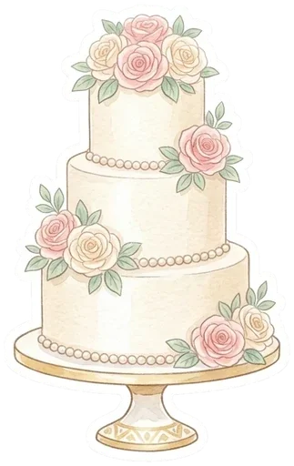
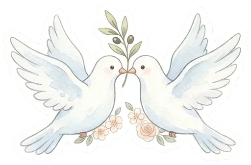

몰래 스케치북
그림 한 장과 한마디를 남겨 주세요. 다른 채티가 남긴 글은 아래에서 바로 볼 수 있고, 내가 쓴 글은 언제든 고치거나 지울 수 있어요. 식이 끝나면 한 권의 스케치북으로 묶어서 수빈이에게 선물합니다.
작성 마감
--:--:--

스케치북 작성이 마감되었어요
모아 주신 마음은 한 권의 스케치북으로 묶어서 수빈이에게 전달할게요. 아래에서 다른 채티의 글은 계속 볼 수 있어요.
0 / 120

스케치북에 잘 담았어요
수빈이에게는 비밀로 해 주세요! 아래 목록에서 내 글을 고치거나 지울 수 있어요.
모인 스케치북 (0장)
실시간아직 아무도 남기지 않았어요. 첫 번째 주인공이 되어 주세요!